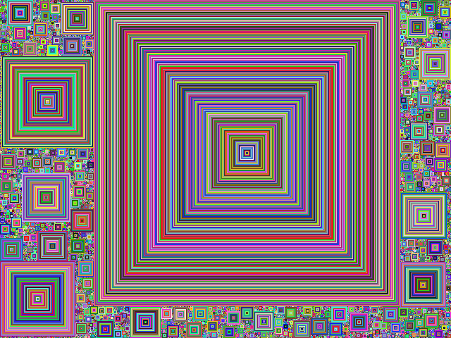

The purpose of this assignment is to learn to
You will generate a visualization that looks like in the figure aboce.
You will be drawing Square Fill using the following logic: (examples provided below.)
ColorGrid documentation
Color documentation
Bridges class documentation
Bridges documentation